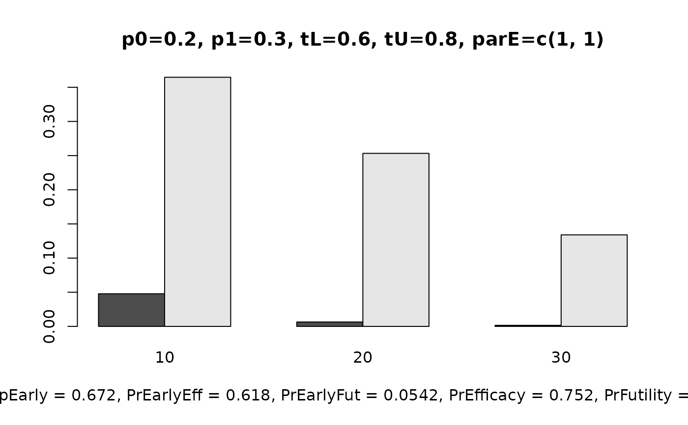

Reads results from ocPredprob, ocPostprob
etc. and displays a bar plot of the operating characteristics
Examples
# get operating character result from oc.postprob
res1 <- ocPostprob(
nnE = c(10, 20, 30), truep = 0.4, p0 = 0.2,
p1 = 0.3, tL = 0.6, tU = 0.8, parE = c(1, 1), sim = 50000
)
res1$oc
#> ExpectedN PrStopEarly PrEarlyEff PrEarlyFut PrEfficacy PrFutility PrGrayZone
#> 1 19.1546 0.67212 0.61794 0.05418 0.75192 0.05574 0.19234
plotOc(res1)
